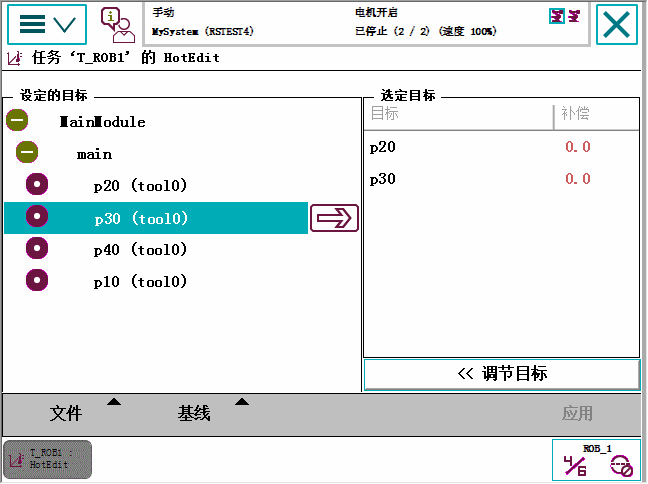

HotEdit 是对编程位置进行调节的一项功能。 该功能可在所有操作模式下运行，即使是在程序运行的情况下。 坐标和方向均可调节。
HotEdit 仅用于已命名的 robtarget 类型位置（请参见以下限制）。
HotEdit 中的可用功能可能会受到用户授权系统 (UAS) 的限制。

Programmed targets（预设目标） | 在树形视图中列出所有已命名的位置。 点击箭头，选择一个或多个要调节的位置。 注意，如果某一位置在程序中有多处运用，那么对于偏移值所做的任何更改在其应用的每个位置均同等有效。 |
Selected targets（选定目标） | 列出所有选定的位置及其当前偏移值。 点击位置，然后点击垃圾桶，即可将位置从选定项目中删除。 |
File（文件） | 保存和加载要调节的位置选择。 如果系统使用了 UAS，这可能是选择 HotEdit 位置的唯一方法。 |
Baseline（基准） | 用于应用或拒绝基准的新偏移值，基准通常被视为位置的原始值。 当您对 HotEdit 会话感到满意，并想将新的偏移值另存为原始位置值时，可将其应用于基准。 这些位置的旧基准值将随之删除，无法恢复。 |
Tune targets（调节目标） | 显示调节设置： 坐标系、调节模式和调节增量。 选择目标，然后使用加减图标指定对所选目标的调节。 |
Apply（应用） | 点击 Apply（应用）以使Tune Targets（调节目标）视图中所作的设置生效。注意，这不会更改位置的基准值！ |
 | 小心 HotEdit offers advanced functionality, which has to be handled carefully. Be aware that new offset values will be used immediately by a running program once the Apply button has been tapped. 在开始使用 HotEdit 功能之前，强烈建议先阅读利用 HotEdit 调节位置，该部分详细介绍了 HotEdit 限制和操作步骤以及基准概念。 |
有关如何修改编程位置的概述，请参阅修改和调节位置一节。
有关通过将机器人微调至新位置以修改位置的详情，请参阅在 Program Editor（程序编辑器）或 Production Window（运行时窗口）中修改位置。一节。
有关 HotEdit 的详细信息，请参阅利用 HotEdit 调节位置。
。
技术参考手册 - 系统参数，章节主题Controller - 类型ModPos Settings。